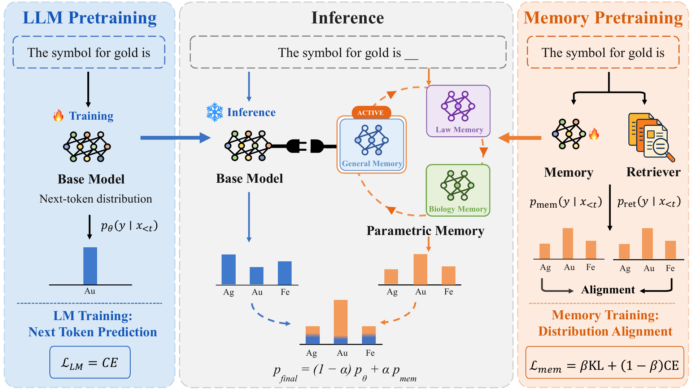
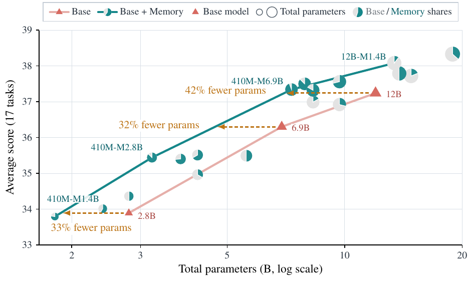

Memory Decoder at Scale: Pretrained, Swappable Parametric Memory
TL;DR
- "Memory Decoder at Scale: A Pretrained, Parametric Long-Term Memory" (arXiv 2607.27919; Rubin Wei, Jiaqi Cao, Jiarui Wang, Junming Zhang, Qipeng Guo, Bowen Zhou, Zhouhan Lin) scales the Memory Decoder idea — a standalone transformer pretrained to imitate a kNN retriever's next-token distribution, then interpolated with a frozen base model at inference — up to 6.9B-parameter memories trained on 300B tokens, enabled by a distributed Faiss pipeline over 207B keys.
- Headline result: allocating parameters to memory beats allocating them to the backbone. A frozen Pythia-410M + 6.9B memory scores 37.34 avg over 17 benchmarks, edging out frozen Pythia-12B (37.24) with 39% fewer total parameters; at matched scores, Base+Memory configurations use 32–42% fewer parameters than backbone scaling.
- Memory is a swappable module: 1.7B domain memories (biology/law/finance) improve every Qwen3 Base backbone from 0.6B to 14B by >9 points on average, beat CPT/LoRA/RAG baselines, and transfer across vocabularies to OLMo-2/OLMo-3 with only 20% of the training budget.
Why this matters
Decoder-only LLMs entangle long-term memory and reasoning in a single parameter set. You cannot scale memory without scaling everything; domain adaptation means touching all weights (CPT cost, catastrophic-forgetting risk); knowledge acquired for one model is dead weight for every other. The two standard escapes both pay at inference: RAG pays context-processing for retrieved passages every call, kNN-LMs pay storage plus nearest-neighbor search per token.
The original Memory Decoder (Cao et al.) proposed a third road: distill the retriever into a small parametric module offline, so inference needs no retrieval at all — just a second forward pass and a logit-level interpolation. But it only showed this at ≤1B scale on WikiText-sized corpora, leaving open whether the recipe scales, whether a general-purpose memory can be pretrained this way, and — the interesting architectural question — how a fixed parameter budget should be split between thinking and remembering. The answer here is the reason to care: across 18 configurations, the Base+Memory curve dominates the backbone-scaling curve, with the largest gains when small backbones get large memories. That is an existence proof for functional specialization in the parameter budget — the LLM analogue of the dissociable memory/reasoning systems the intro motivates from neuroscience — and it lands squarely on this tracker's recurring question: what belongs in weights vs. context vs. external stores, and which pieces can be made modular and reusable.
The core idea
A Memory Decoder \(M_\psi\) is a plain transformer decoder that shares the base model's tokenizer and vocabulary but never sees retrieved text. It is pretrained so that its output distribution matches what a kNN retriever would have returned for each context. Build a datastore from a frozen base LM \(M_\theta\): every corpus position \(t\) contributes a key \(k_t=\phi_\theta(c_t)\) (final-layer hidden state of context \(c_t=x_{<t}\)) and value \(x_t\) (the observed next token). For a query \(q_t\), the \(K\) nearest keys vote with softmax distance weights:
where \(\mathcal{N}_K(q_t)\) is the set of \(K\) nearest key–value pairs under distance \(d\) and \(\tau\) a temperature — a sparse distribution capturing the diversity of plausible continuations, richer supervision than a single target token. The memory is trained on a mix of distribution alignment and standard LM loss:
with \(\beta\in[0,1]\) weighting retrieval imitation against staying close to the corpus distribution. At inference, base and memory run in parallel on the same context and their distributions are interpolated:
where \(\alpha\in[0,1]\) (tuned on validation, then fixed) sets the memory's contribution. Retrieval exists only offline, as a supervision-construction step. Swapping domains = swapping which \(M_\psi\) is loaded; the backbone stays frozen.
How it works

Figure 1 from the paper: a standard LM is pretrained then frozen; a parametric memory is pretrained to align with a retriever's distribution; at inference the frozen base and an activated memory (general, law, biology, ...) process the same context in parallel and interpolate predictions.
The paper's real contribution is making this run at pretraining scale. Constructing kNN targets for the deduplicated Pile means 207B keys and 207B queries — quadratic-ish search over 4096-dim Pythia-6.9B hidden states — which a standard Faiss pipeline cannot do. Their distributed pipeline:
# Offline: kNN distribution construction over 207B tokens
1 for each corpus position t: k_t = phi_theta(c_t) # frozen Pythia-6.9B
2 train OPQ transform: 4096-dim keys -> 256-dim search vectors (OPQ256)
3 learn IVF partition over compressed space
(IndexHNSW as quantizer: assigns vectors, routes queries to centroids)
4 shard contiguous centroid ranges into independent IndexIVFPQ indices
5 for each query batch:
route via HNSW -> group queries by shard
parallel GPU search within each shard (no cross-shard random access)
writer workers merge candidates per query -> top-K neighbors
drop top hit if key == query (no trivial self-retrieval)
cache p_ret in SPARSE form (<= K token ids + probs; ~65 pairs/row,
~250x smaller than dense over the 50,304-token vocab)
# Memory pretraining (1.4B / 2.8B / 6.9B, 300B tokens, 256 A800s)
6 distributed workers mmap sparse shards; stream only rows each batch needs
7 loss = beta * KL(p_ret || p_psi) + (1-beta) * CE(x_t) # renormalize in FP32
# Inference
8 p_final = (1-alpha) * p_theta + alpha * p_psi # parallel forward passes
General memory: 1.4B/2.8B/6.9B memories initialized from deduplicated Pythia checkpoints, trained 300B tokens (~1.5 epochs over the datastore, matching Pythia's own pretraining budget). Domain memory: same recipe on biology, law, and finance corpora up to 4.4B tokens; datastores built with a domain-CPT'd Qwen3-4B-Base; memories initialized from Qwen3-1.7B-Base, compute matched to one Qwen3-8B CPT epoch. Cross-vocabulary transfer: swap embedding layer + LM head, then continue training on an OLMo-vocabulary datastore at 20% of the standard budget.
Results
- General memory, matched scales (17 benchmarks, frozen Pythia): equal-size memory lifts the average at every scale — 32.76→34.36 (1.4B), 33.89→35.49 (2.8B), 36.30→37.79 (6.9B); 1.4B+1.4B beats the 2.8B backbone at identical total parameters and budget. Gains concentrate on knowledge tasks (TriviaQA 8.30→17.11 at 2.8B; 2WikiMultiHopQA 16.89→22.57 at 1.4B), improving 47 of 51 task×scale combinations.

Figure from the paper: zero-shot average vs. total parameter count (log scale). All 18 Base+Memory configurations beat their backbone; 410M+6.9B-memory matches Pythia-12B with 42% fewer parameters at that point of the curve.
- Parameter allocation: the headline 410M + 6.9B-memory = 37.34 vs. Pythia-12B = 37.24 (39% fewer parameters); at matched average scores the Base+Memory curve uses 33%/32%/42% fewer parameters than the 2.8B/6.9B/12B baselines. Since the two components run in parallel, latency can also be lower than an equal-size monolith.
- Domain memory (Qwen3 0.6B–14B): 1.7B memories give average gains of 9.88/9.64/10.00/9.09/9.99 points across the five backbone scales, beating the strongest of CPT/LoRA/RAG by ≥4.05 points everywhere (8.53 at 0.6B). On Qwen3-14B: +17.96 BioInst, +8.97 LawBench, +3.04 FinEval.
- Cross-vocabulary transfer: Qwen3-trained memories moved to OLMo backbones at 20% budget still give +4.26 (OLMo-2-7B) and +7.77 (OLMo-3-7B) domain averages, improving all six evaluations.
- Analyses: gains persist under 3-shot/5-shot prompting (+1.2–1.9 avg) — memory is complementary to in-context examples; bigger memory monotonically helps (up to +4.56 for the smallest backbone); and a compute/data/capacity-matched CPT model attached via the same interpolation underperforms by up to 10.21 points — the KL-to-retriever objective, not the plug-in interface, carries the gain. Memory also makes training content more extractable (verbatim EM 42.4%→49.7%; domain-anchor completion 22.6%→56.5%).
How it connects
- PlugMem (this tracker) is the closest framing sibling — task-agnostic plugin memory for agents — but stores structured facts/skills consumed through context; Memory Decoder is memory at the logit level, invisible to the context window. Different layers of the same modularity thesis.
- agentic-context-management legislates what enters, stays in, and leaves context; Memory Decoder is the limiting case where domain knowledge never enters context at all — zero context tax, zero inspectability. ACM's governance questions (provenance, staleness) reappear here as "when do you retrain the memory?"
- pro-long-programmatic-memory showed keep-everything-and-search beats bespoke harnesses for episodic, within-task memory. Memory Decoder is orthogonal: parametric semantic memory of corpus knowledge. A plausible stack: PRO-LONG for the interaction log, a domain Memory Decoder as the knowledge substrate.
- MemHarness attacks stale retrieval by reconstructing memories before acting; Memory Decoder abolishes inference-time retrieval instead — but shares the staleness failure mode, frozen into weights until retrained.
- Self-Guided TTT (Meta/UVA) pushes knowledge into weights at test time by picking spans to train on; Memory Decoder amortizes the same weight-space injection offline into a reusable, swappable artifact. Per-instance adaptivity vs. train-once-reuse-everywhere is the trade.
Critical take
- The retrieval cost didn't disappear — it moved. 256 A800s, a 207B-entry sharded index, and 300B tokens of KL supervision is an enormous offline bill (the Limitations section concedes this grows with corpus scale). The economics only work if one memory is reused across many backbones and deployments — the property they demonstrate — but "no retrieval at inference" means amortized, not free.
- General-memory evidence lives on Pythia. The parameter-allocation curve — the paper's most-quotable result — is built on a weak, dated family whose 12B anchor underperforms modern 1B models. Whether a general memory still buys anything on a strong backbone whose pretraining already absorbed the Pile is untested; the Qwen3 results are domain-memory only, where the corpus is genuinely novel. Discount the 39%-fewer-parameters headline accordingly.
- Fixed α is a blunt instrument. One global interpolation weight per (backbone, memory) pairing, tuned on validation; the paper flags adaptive weighting as future work. On reasoning-heavy inputs a static memory vote is noise — few-shot robustness is reassuring, but averages could hide per-task regressions.
- Name collision warning: this is not agent memory. Nothing here stores experience or anything written at inference time; it is corpus-knowledge distillation into a module — closest to modular continued-pretraining, not to memory harnesses.
- The extractable-memorization result cuts both ways: 56.5% vs. 22.6% verbatim domain-anchor completion is presented as traceability, but it equally says the memory objective memorizes training text far more verbatim than CPT — a copyright/privacy liability if the corpus isn't clean.
- Cross-model reuse is qualified: same-vocabulary transfer is free; cross-vocabulary needs embedding/head surgery plus 20% retraining on a datastore built for the target family's representations (inferred from the setup description — verify in the paper).
If you remember three things
- Memory can be a pretrained, swappable module: train a decoder to imitate a kNN retriever's distribution (\(\beta\,\mathrm{KL}(p_{\mathrm{ret}}\Vert p_\psi)+(1-\beta)\,\mathrm{CE}\)), then interpolate with a frozen base at the logits — retrieval-quality knowledge with no inference-time retrieval (arXiv 2607.27919).
- Parameters spent on memory beat parameters spent on backbone (on Pythia): 410M base + 6.9B memory ≥ 12B base at 39% fewer parameters, and the whole Base+Memory curve dominates backbone scaling — evidence that memory/reasoning disentanglement is a real architectural axis, not just an engineering convenience.
- The enabling systems work is kNN supervision at 207B-key scale: OPQ compression (4096→256 dims), HNSW-routed IVFPQ shards with parallel GPU search, and ~250× sparse distribution storage with streaming loads — the recipe that turns kNN-LM distillation from a WikiText trick into a pretraining-scale method.